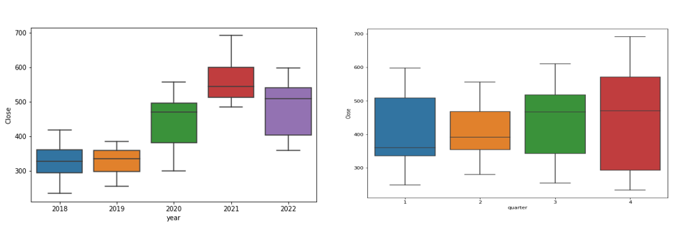
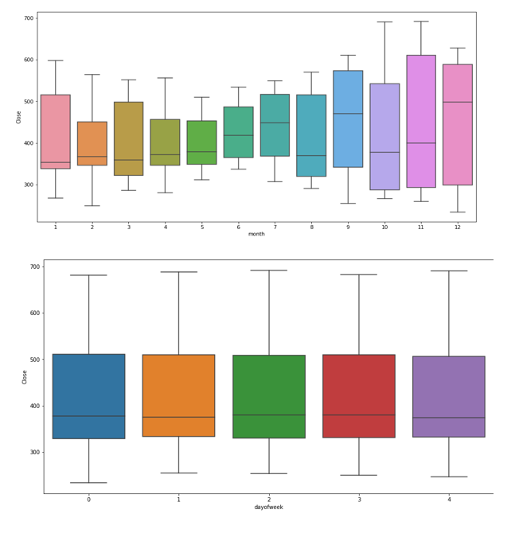
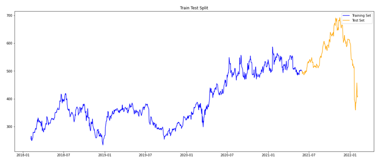
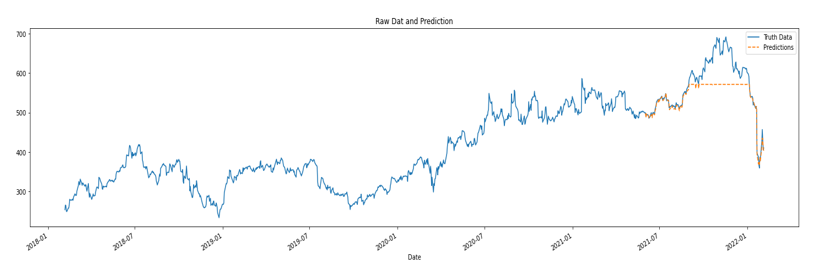

The dataset for the netfix stock market data used here was obtained from Kaggle.
Netflix Stock Market Prection Using Time Series forecasting (XGBOOST)
The objective of this project is to design a stock prediction model to predict the closing price of Netflix using time series forecasting with XGBOOST algorithm
Algorithmic trading has transformed the stock market and its related industries. At the moment, bots are handling more than 70% of all trades taking place in the US. The days of suited persons waving sheets of paper and shouting into telephones are long gone.
This prompted me to think about how I could create my own algorithm to trade stocks, or at the very least, try to anticipate them with some degree of accuracy.
The outcomes weren't horrible either!
As a data scientist, it makes our work easier when we have a functional or business grasp of what we are trying to construct, therefore I felt compelled to offer some business knowledge as well. I am not an expert in the stock market, but I thought it would help understand. In stock trading, the closing price simply refers to the last price a buyer paid for a particular stock during business hours, whereas the opening price refers to the price of the stock's initial transaction.
Dataset.
EDA and Feature Creation
In time series analysis and forecasting, “time” can be the only feature you have at your disposal so it’s better to extract as much information as possible from it. The following function creates columns out of the DateTime index. For example, at the time 1/1/2017 0:10 , the command df.index.hour will extract the value 0, since it’s midnight. df.index.dayofweek will show a 6 as January 1st, 2017 was a Sunday (numeration starts from 0), and so on.
I have created the below boxplots to understand the trend of stock market prices in week, month, quarter etc.

Splitting the dataset into train and test sets
To predict the stock market, the dataset was split into train and test sets. The model was trained on the train set and the predictions were then tested with the test set. The below graph shows the train test split.
Predictions .
Next, to predict records in our test set I have used Gradient Bossting (XGBOOST) algorithm.
Hyperparameters settings for the algorithm is as follows:
n_estimators : the number of learning rounds the XGBoost algorithm will try to learn from the training data
max_depth : the maximum depth a tree can have, a deeper tree is more likely to cause overfitting
learning_rate : or shrinkage factor, as new trees are created to correct residual errors, the learning rate (<1.0) “slows down” the ability of the model to fit the data and consequently learn as the number of trees increases
verbose : how often the model prints out on the console the result, we set 100 here as the n_estimators is quite high. The default value is 1
The plot below shows the output of the predictions.
For detailed resutls of analysis and code please visit github from the below link.
View on Github